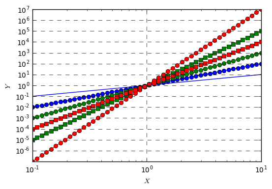

Jupyter QtConsole 4.2.1
Python 3.5.2 |Anaconda 4.2.0 (64-bit)| (default, Jul 5 2016, 11:41:13) [MSC v.1900 64 bit (AMD64)]
Type "copyright", "credits" or "license" for more information.
IPython 5.1.0 -- An enhanced Interactive Python.
? -> Introduction and overview of IPython's features.
%quickref -> Quick reference.
help -> Python's own help system.
object? -> Details about 'object', use 'object??' for extra details.
In [1]: %matplotlib inline
In [2]: import numpy as np
In [3]: import matplotlib.pyplot as plt
In [4]: #log x
In [5]: #semilogx -> x log scale, y normal scale
In [6]: #semilogy -> y log scale, x normal scale
In [7]: #loglog -> both x and y on log scale
In [8]: #np.logspace() -> evenly spaced points.
In [9]: x = np.linspace(-50,15,200)
...: y = x**2
...: y1 = x
...: y2 = x**5
...: y3 = x**7
...: y4 = x**3
...: y5 = x**4
...: plt.plot(x,y1)
...: plt.plot(x,y, 'bo-')
...: plt.plot(x,y2, 'gs-')
...: plt.plot(x,y3, 'ro-')
...: plt.plot(x,y4, 'go-')
...: plt.plot(x,y5, 'rs-')
...: plt.axis([-15,15,-15,15])
...: plt.xlabel("$X$")
...: plt.ylabel("$Y$")
...: plt.grid(b=True, which='major', color='black', linestyle='--')
...: plt.axhline(linewidth=2, color='black')
...: plt.axvline(linewidth=2, color='black')
...:
Out[9]: <matplotlib.lines.Line2D at 0x1cb714a8080>
In [10]: x = np.logspace(-1,1,50) #log(10) 0.1 = -1 | 10^-1 = 0.1 | 10^1 = 10
...: y = x**2
...: y1 = x
...: y2 = x**5
...: y3 = x**7
...: y4 = x**3
...: y5 = x**4
...: plt.loglog(x,y1)
...: plt.loglog(x,y, 'bo-')
...: plt.loglog(x,y2, 'gs-')
...: plt.loglog(x,y3, 'ro-')
...: plt.loglog(x,y4, 'go-')
...: plt.loglog(x,y5, 'rs-')
...: plt.xlabel("$X$")
...: plt.ylabel("$Y$")
...: plt.grid(b=True, which='major', color='black', linestyle='--')
...: plt.axhline(linewidth=2, color='black')
...: plt.axvline(linewidth=2, color='black')
...:
Out[10]: <matplotlib.lines.Line2D at 0x1cb73671f60>

In [11]: